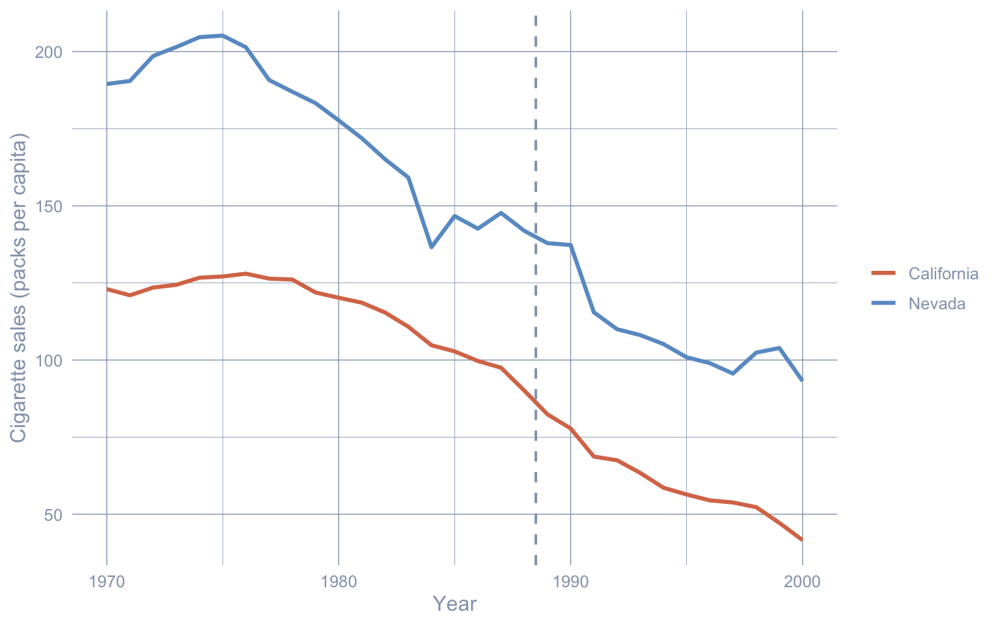

flowchart TB
subgraph "California"
CA_pre["Pre (1984–88) mean<br/>= 99.0"] --> CA_d["Δ California =<br/>72.0 − 99.0 = −27.0"]
CA_post["Post (1989–93) mean<br/>= 72.0"] --> CA_d
end
subgraph "Nevada (control)"
NV_pre["Pre (1984–88) mean<br/>= 143.1"] --> NV_d["Δ Nevada =<br/>121.8 − 143.1 = −21.3"]
NV_post["Post (1989–93) mean<br/>= 121.8"] --> NV_d
end
CA_d --> DD["DiD ATT =<br/>(−27.0) − (−21.3) = −5.7"]
NV_d --> DD
style CA_pre fill:#d97757,stroke:#cbd5e0,color:#fff
style CA_post fill:#d97757,stroke:#cbd5e0,color:#fff
style NV_pre fill:#6a9bcc,stroke:#cbd5e0,color:#fff
style NV_post fill:#6a9bcc,stroke:#cbd5e0,color:#fff
style DD fill:#00d4c8,stroke:#cbd5e0,color:#141413
3 Basic Differences-in-Differences
3.1 The DiD idea
Chapter 2 showed that any within-unit method — growth curve, ARIMA — is fragile because the counterfactual is identified only by an assumption the data cannot verify. Difference-in-Differences borrows strength from outside California by adding one control unit, replacing an extrapolation assumption with a comparability assumption.
DiD picks one control state — Nevada, for this chapter — and treats its pre-to-post change as the counterfactual change California would have experienced absent the policy. Subtract Nevada’s change from California’s change. Whatever is left over is “what the policy did”. The canonical applied example is Card & Krueger (1994), who compared fast-food employment in New Jersey and Pennsylvania around New Jersey’s 1992 minimum-wage hike.
The identifying assumption is parallel trends: California and Nevada would have moved on parallel paths without the policy. Differences in levels are fine; differences in trends are not. The estimand is a proper Average Treatment effect on the Treated (ATT) for California.
3.2 The change-of-changes identity
The formal DiD identity is
\[\hat{\tau}_{\text{DiD}} = \big(\bar{Y}_{\text{CA, post}} - \bar{Y}_{\text{CA, pre}}\big) - \big(\bar{Y}_{\text{NV, post}} - \bar{Y}_{\text{NV, pre}}\big).\]
In the chapter 1 notation, this is the imputation \(\widehat{Y_{1t}(0)} = \overline{Y}_{1,\text{pre}} + (\overline{Y}_{0,\text{post}} - \overline{Y}_{0,\text{pre}})\) — California’s pre-period mean plus Nevada’s pre-to-post change.
The matching population regression is
\[Y_{it} = \alpha + \beta_1 \, \mathrm{Post}_t + \beta_2 \, \mathrm{Treat}_i + \tau \, (\mathrm{Post}_t \times \mathrm{Treat}_i) + u_{it},\]
where \(\mathrm{Treat}_i = 1\) for California and \(0\) for Nevada, and \(\mathrm{Post}_t = 1\) for \(t \ge 1989\). The interaction coefficient \(\tau\) is the DiD ATT — algebraically identical to the change-of-changes identity above, but in a form that gives us a standard error.
The four ingredients of the DiD calculation are easier to see as a 2×2 grid. Each cell holds a group mean; the two within-state changes are the row differences; the DiD estimate is the difference of those differences.
3.3 Setup and data
Packages. tidyverse covers wrangling and plotting. sandwich and lmtest supply the heteroskedasticity-and-autocorrelation-consistent (HAC) standard errors used in the regression below. Inference on a 2×2 panel is genuinely awkward — see the “Fit and HAC inference” section for an honest discussion of why HAC is a compromise rather than a textbook fix (Bertrand et al., 2004). The R/table_helpers.R helper provides ms_pretty(), the modelsummary wrapper that styles the fitted regression table.
Code
library(tidyverse)
library(sandwich)
library(lmtest)
source("R/table_helpers.R")
# set.seed not strictly needed here — OLS and means are deterministic —
# but kept for consistency with the rest of the book.
set.seed(42)
knitr::opts_chunk$set(dev.args = list(bg = "transparent"))
theme_set(
theme_minimal(base_size = 12) +
theme(
plot.background = element_rect(fill = "transparent", color = NA),
panel.background = element_rect(fill = "transparent", color = NA),
panel.grid.major = element_line(color = "#94a3b8", linewidth = 0.25),
panel.grid.minor = element_line(color = "#94a3b8", linewidth = 0.15),
text = element_text(color = "#94a3b8"),
axis.text = element_text(color = "#94a3b8")
)
)Dataset. DiD trades the comparison-unit problem for a smaller, sharper subset of the panel. From the full 39-state × 31-year dataset we keep only California and Nevada and only the 1984–1993 window — five pre-period years (1984–1988) and five post-period years (1989–1993). Nevada is the hand-picked control, chosen as a geographically and demographically adjacent state. (Reno and Las Vegas both sit inside California’s media market and share its retail-price corridor; Nevada was also one of the donor states with non-zero weight in Abadie, Diamond & Hainmueller’s synthetic California — see chapter 4.) The state factor is releveled with Nevada as the reference so that the stateCalifornia and stateCalifornia:prepostPost coefficients land on California’s main effect and extra change relative to Nevada — the DiD coefficient is the latter.
Code
prop99 <- read_rds("data/proposition99.rds") |> as_tibble()
# Keep only California and Nevada in the 1984-1993 window and add the
# Pre/Post factor. Make Nevada the reference level so that the
# stateCalifornia interaction lands on California's extra change.
prop99_did <- prop99 |>
filter(state %in% c("California", "Nevada"),
year > 1983, year < 1994) |>
mutate(prepost = factor(year > 1988, labels = c("Pre", "Post")),
state = factor(state, levels = c("Nevada", "California")))The resulting prop99_did tibble has 20 rows (2 states × 10 years) and four columns: state, year, cigsale, and prepost. Those are the only inputs the DiD regression needs.
3.4 Fit and HAC inference
The model. The two-way interacted OLS cigsale ~ state * prepost is the regression form of the 2×2 grid above — the arithmetic in the grid is literally what this regression computes. The four estimated coefficients map one-to-one onto the grid cells: the intercept is the Nevada–Pre cell, stateCalifornia shifts up or down to land on the California–Pre cell, prepostPost shifts to the Nevada–Post cell, and the interaction stateCalifornia:prepostPost is exactly the DiD ATT \(\hat\tau\) — the extra California change beyond what happened to Nevada over the same window.
Standard errors on a 2×2 panel are tricky. Textbook OLS SEs assume i.i.d. errors, which fails here because within-state residuals are serially correlated over the ten-year window. The standard fix — clustering by state (Bertrand et al., 2004) — is degenerate with only two clusters: the cluster-robust variance estimator’s asymptotic theory requires the number of clusters \(G\) to grow, and at \(G = 2\) it collapses to a single 2×2 outer product. Software will compute a number; one cannot interpret it. We report HAC-robust SEs via sandwich::vcovHAC as a transparent compromise: they correct for within-unit autocorrelation by treating the stacked panel as a long time series, but they ignore the cross-state row boundary in the stacked design. The qualitative reading — that the DiD point estimate is statistically indistinguishable from zero — survives every reasonable choice; readers should treat the \(p\)-value as a rough heuristic, not a textbook test.
Code
# Two-way interacted regression: state main effect + Pre/Post main effect
# + (state x Pre/Post) interaction. The interaction is the DiD estimate.
fit_did <- lm(cigsale ~ state * prepost, data = prop99_did)
# HAC-robust standard errors for the four coefficients.
ms_pretty(list("Two-way interacted OLS, HAC SEs" = fit_did),
vcov = sandwich::vcovHAC,
coef_map = c("(Intercept)" = "Nevada · Pre (baseline)",
"stateCalifornia" = "California main",
"prepostPost" = "Post main",
"stateCalifornia:prepostPost" = "DiD interaction"),
notes = "Standard errors HAC-robust via sandwich::vcovHAC.")| Two-way interacted OLS, HAC SEs | |
|---|---|
| Nevada · Pre (baseline) | 143.100*** |
| (1.092) | |
| California main | -44.120*** |
| (3.880) | |
| Post main | -21.340* |
| (7.687) | |
| DiD interaction | -5.680 |
| (5.393) | |
| Num.Obs. | 20 |
| R2 | 0.914 |
| Std.Errors | Custom |
| + p < 0.1, * p < 0.05, ** p < 0.01, *** p < 0.001 | |
| Standard errors HAC-robust via sandwich::vcovHAC. | |
Reading the output. The interaction coefficient \(\hat\tau\) (R name: stateCalifornia:prepostPost) is roughly \(-5.68\) packs (HAC SE ≈ 5.39, \(p \approx 0.31\)). That is dramatically smaller than the naive \(-27.02\) from chapter 1, and statistically indistinguishable from zero. Why? Because the prepostPost main effect is also large: \(-21.34\) packs. Nevada’s own cigarette sales fell by 21.3 packs between 1984–1988 and 1989–1993. When DiD subtracts that Nevada change from California’s change, almost all of California’s drop is absorbed.
3.5 Visual diagnostic
What to look for. DiD rests entirely on the parallel-trends assumption: that California and Nevada would have moved in lockstep absent the policy. The data themselves cannot prove this counterfactual, but we can at least inspect the pre-period by plotting both states on the same axes over the full 1970–2000 window. Three features matter visually: (1) do the two pre-1989 lines move roughly in parallel? (2) does Nevada also bend downward after 1989, and if so, by how much? (3) is the post-1989 gap between California and Nevada much bigger than the pre-period gap? If Nevada is itself trending down post-1989, the DiD contrast collapses — the Nevada change subtracts away most of California’s drop.
Code
two_states <- prop99 |>
filter(state %in% c("California", "Nevada"))
ggplot(two_states, aes(x = year, y = cigsale, color = state)) +
geom_line(linewidth = 1.1) +
geom_vline(xintercept = 1988.5, color = "#94a3b8",
linetype = "dashed", linewidth = 0.7) +
scale_color_manual(values = c("California" = "#d97757",
"Nevada" = "#6a9bcc")) +
labs(x = "Year", y = "Cigarette sales (packs per capita)",
color = NULL)
Formal pre-trends test. The visual is suggestive, but parallel trends is a claim about slopes in the pre-period, and we can test it directly. Fit cigsale ~ state * year on the 1984–1988 pre-window: if parallel trends holds, the stateCalifornia:year interaction — the slope difference between the two states’ pre-period paths — should be statistically indistinguishable from zero.
Code
pre_window <- prop99_did |> filter(prepost == "Pre")
fit_pre <- lm(cigsale ~ state * year, data = pre_window)
ms_pretty(list("Pre-trend slope test (1984-1988)" = fit_pre),
vcov = sandwich::vcovHAC,
coef_map = c("(Intercept)" = "Nevada baseline",
"stateCalifornia" = "California level shift",
"year" = "Nevada slope",
"stateCalifornia:year" = "Slope difference (CA - NV)"),
notes = "If parallel trends held, the slope difference should be ~0.")| Pre-trend slope test (1984-1988) | |
|---|---|
| Nevada baseline | -2160.655 |
| (3006.082) | |
| California level shift | 9151.058* |
| (3052.496) | |
| Nevada slope | 1.160 |
| (1.514) | |
| Slope difference (CA - NV) | -4.630* |
| (1.537) | |
| Num.Obs. | 10 |
| R2 | 0.985 |
| Std.Errors | Custom |
| + p < 0.1, * p < 0.05, ** p < 0.01, *** p < 0.001 | |
| If parallel trends held, the slope difference should be ~0. | |
The slope-difference estimate is roughly \(-4.63\) packs per year with HAC \(p \approx 0.024\). Even before Proposition 99, California was declining roughly 4.6 packs/year faster than Nevada — i.e. the two series were already diverging in the direction the policy would later push, so the parallel-trends assumption is rejected by the pre-period data themselves. This is load-bearing: it turns the chapter’s diagnosis from “Nevada has its own decline (visible in the plot)” into “California was already separating from Nevada (testable, rejected)”.
This is the textbook DiD pitfall. A single control unit that itself is shifting in the same direction makes the contrast collapse. Nevada is geographically and culturally adjacent to California. It inherits many of the same secular forces: rising health awareness, federal tobacco settlements, retail-price spillovers. So it is a poor “what would California have done?” control.
Common pitfall. Picking the one “most similar” control by hand. If your single control is subject to the same secular forces as the treated unit — geographic neighbours, policy spillovers, regional macro shocks — the contrast collapses and DiD silently reports zero.
A second pitfall. Clustering standard errors by state on a two-state panel. The cluster-robust variance estimator (Bertrand et al., 2004) requires the number of clusters to grow; at \(G = 2\) it collapses to a single 2×2 outer product and is uninterpretable. Software will compute a number; do not trust it. With only two units, accept that classical inference on the DiD coefficient is unavailable and let the point estimate carry the argument.
A third pitfall. Treating Nevada as causally exogenous. Nevada borders California on a 600-km stretch, sits inside California’s TV-advertising and retail-price corridor, and inherits its anti-smoking media spillovers. The “control” is not policy-untreated in the deep sense — only in the narrow sense of not having passed Proposition 99 itself.
Recap. DiD against Nevada says \(-5.7\) packs and we cannot reject zero. The lesson is not that DiD is broken — it is that DiD with a single similar control unit is fragile. Synthetic Control (chapter 4) is the principled response: instead of one neighbour, blend many Nevadas into a weighted synthetic California — the optimisation picks the weights so the analyst no longer has to hand-pick the control.
3.6 Further reading
This chapter is the canonical 2×2 / single-shock DiD: one treated unit (California), one control unit (Nevada), one pre-period, one post-period. Chapter 8 (Part II) revisits DiD in the staggered-adoption setting — many treated units that switch at different dates — using the Callaway–Sant’Anna group-time ATT estimator (Callaway & Sant’Anna, 2021), the Sun–Abraham interaction-weighted estimator (Sun & Abraham, 2021), and the Rambachan–Roth honest-DiD sensitivity bounds (Rambachan & Roth, 2023) on a Callaway-Sant’Anna minimum-wage county panel. The two chapters together cover the modern DiD toolkit.
Classical references. Card & Krueger (1994) is the textbook applied 2×2 DiD (New Jersey vs Pennsylvania minimum wage and fast-food employment). Bertrand et al. (2004) is the seminal warning that DiD standard errors are biased toward zero under residual autocorrelation — the reason this chapter’s inference choice is non-trivial. Bernal et al. (2017) is the practitioner reference for parallel-trends visual diagnostics. For modern multi-period DiD with staggered adoption, did (Callaway–Sant’Anna) and fixest::feols (two-way fixed effects with cluster-robust SEs — but only when there are enough clusters) are the standard R workhorses.